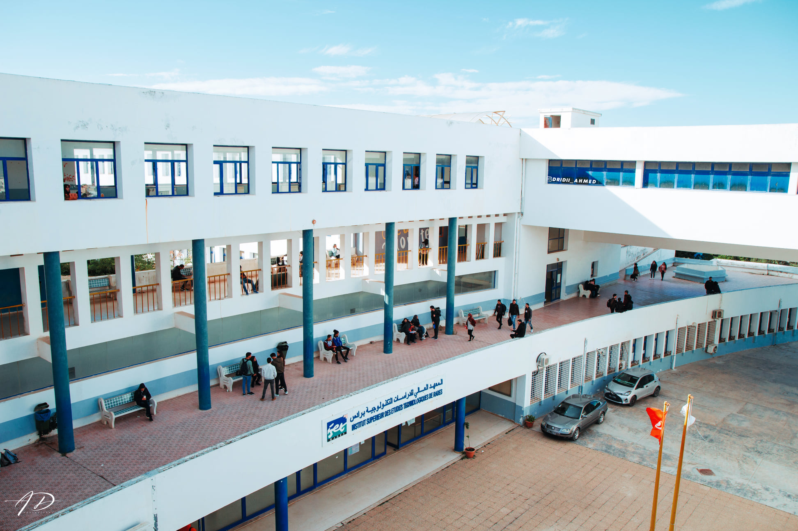
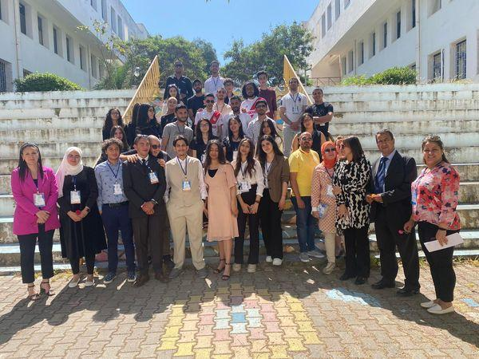

<section class="about-section">
    <div class="container">
        <div class="row clearfix">

            <!--Content Column-->
            <div class="content-column col-md-6 col-sm-12 col-xs-12">
                <div class="inner-column">
                    <div class="sec-title">
                        <div class="title">About Us</div>
                        <h2>We Are The Leader In <br> Technologies</h2>
                    </div>
                    <div class="text">In an environment characterized by the generalization of training
                        professionalizing to the whole of the Tunisian university, the Higher Institute of Studies
                        Technologies de Rades (ISET de Rades) is obliged to differentiate,
                        diversify and enhance its training offer and able to establish the school as a
                        as a flagship institution of technological higher education in Tunisia. The launch of this
                        institute therefore comes at the right time to promote active, oriented and meaningful training
                        to best meet the real needs of the industrial environment. It is a collective reflection
                        on the strategic orientations put forward in order to sustain the development of the school and
                        to broaden its influence on its regional, national and even international environment.
                    </div>
                    <!-- <div class="email">Request Quote: <span class="theme_color">freequote@gmail.com</span></div> -->
                    <a id="read-more" class="theme-btn btn-style-three"
                        (click)="showMore = !showMore; scrollToAdditionalContent()" *ngIf="!showMore">
                        Read More
                    </a>
                </div>
            </div>

            <!--Image Column-->
            <div class="image-column col-md-6 col-sm-12 col-xs-12">
                <div class="inner-column " data-wow-delay="0ms" data-wow-duration="1500ms">
                    <div class="image">
                        
                        <div class="overlay-box">
                            <div class="year-box"><span class="number">28</span>Years <br> Of <br> Success</div>
                        </div>
                    </div>
                </div>
            </div>

            <!-- Additional content -->
            <div id="additional-content" class="col-md-12">
                <div *ngIf="showMore">


                    <header class="navbar hero" role="banner">
                        <div class="container">
                            <div class="navbar-header">
                                <a href="#" class="navbar-brand">
                                    <p>

                                        ISET RADES
                                    </p>
                                </a>
                            </div>
                        </div>
                    </header>

                    <div id="about-main">
                        <div class="jumbotron">
                            <div class="jumbotron-inner">
                                <div class="top-box">
                                    <div class="content-box">
                                        <h1>
                                            About ISET RADES
                                        </h1>
                                        <p>
                                            ISET Rades is a prominent Tunisian university renowned for its excellence in
                                            technical education and vocational training. It offers diverse programs and
                                            fosters a dynamic learning environment for students.
                                        </p>
                                    </div>
                                </div>
                            </div>
                            <div class="img-layer-container">
                                <div class="team-image" id="team-image">
                                    
                                </div>

                                <div class="circles-container">
                                    <div class="img-1">
                                        
                                    </div>
                                    <div class="img-2">
                                        
                                    </div>
                                </div>
                            </div>
                        </div>
                        <div class="story-container">
                            <div class="need-for-dx-container">
                                <h3 class="text-center">
                                    Establishing :

                                </h3>
                                <p>
                                    Created by law 51-92 of May 18, 1992; ISET Radès is a Tunisian university institute
                                    attached to the university. Teaching is largely provided by teachers from the body
                                    of technologists. Placed under the supervision of the Ministry of Higher Education
                                    and Scientific Research and managed by the general management; offers initial
                                    training leading to a diploma, continuing education related to the needs of
                                    companies, a technological resource center, a skills center and a business
                                    incubator.
                                </p>
                                <div class="img-container">
                                    
                                </div>
                            </div>
                            <div class="container-divider"></div>
                            <div class="our-tech-container">
                                <h3 class="text-center">
                                    Mission:
                                </h3>
                                <p>
                                    ISET Radès is authorized to establish partnership relations with the economic
                                    environment to ensure the training of executives (bac +3 and bac +5) meeting the
                                    needs of companies. The ISET of Radès delivers to its students an applied bachelor's
                                    degree in the fields of technology and management. and also the professional
                                    master's degree in several disciplines.
                                </p>
                                <div class="img-container">
                                    
                                </div>
                            </div>

                            <div class="container-divider"></div>
                            <div class="today-container">
                                <h3 class="text-center">
                                    More to learn about
                                </h3>
                                <p>
                                    Backed by a wealth of experience, teachers who provide current training, in the
                                    development of a professional training offer, our institute finds in the confidence
                                    placed in it by professionals a major asset for consolidating a more active
                                    partnership which would allow promote the establishment of collaboration and
                                    technology transfer agreements. In addition to its main mission of initial training
                                    of future executives at the Applied Bachelor's and Professional Master's level in
                                    the technological fields of Mechanical Engineering, Electrical Engineering, Civil
                                    Engineering, Computer Technologies and Economics and Management Sciences, the ISET
                                    of Radès has a Continuing Education Service.
                                </p>
                                <p>
                                    Our institute is empowered to design and implement continuing education programs
                                    and/or recruitment or promotion competitions. Since 2015, it has been approved as a
                                    training center for the CAME program (Employability Improvement Check). Indeed, we
                                    have and are in the process of ensuring:
                                </p>
                                <ul>
                                    <li>certifying training: The ISET in Rades offers certifying training in C2i, SISCO,
                                        Solid-Works and LabView.</li>
                                    <li>Long-term training: The ISET of Rades organizes training cycles for the
                                        qualification of participants in the grade transition, taking into account the
                                        needs and specificities of the employing establishments (ATFP, OACA, Ministry of
                                        Equipment, Official Printing of the Tunisian republic, …)</li>
                                    <li>Organization of competitions: The ISET of Radès is authorized to organize
                                        competitions on behalf of public and private institutions (recruitment,
                                        preparation for grade passage, etc.).</li>
                                    <li>Inter-Intra: Our teacher trainers can also intervene intra, to animate
                                        tailor-made training, which meets the specific needs of our partners.</li>

                                </ul>
                            </div>
                            <div class="container-divider"></div>
                        </div>
                    </div>
                </div>
            </div>

        </div>
    </div>
</section>